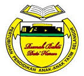

ORGANIZATION CHART OF RUMAH BAKTI DATO' HARUN
Chairman :
Y.Bhg. Dato’ Mohd Fahmi Bin Ibrahim
(Chairman of the Finance & Investment Committee)
Deputy chairman:
Tuan Haji Mohd Nasir Bin Hassan (Chairman of the Governance Committee)
Honorary secretary:
Tuan Haji Mohd Zahar Bin Abdul Samad
Honorary Assistant Secretary:
Tuan Haji Idris Bin Ngah
Honorary Treasurer:
Y.Bhg. Tan Sri Dato’ Haji Azman Shah Bin Dato' Seri Haji Harun
Member of the Working Council Committee:
Tuan Haji Ghazali Bin Othman (Chairman of the Disciplinary Committee)
Puan Hajah Hawa Binti Anuar Shah (Chairman of the Education Committee)
Profesor Dr. Khalib Bin Abdul Latip (Chairman of the Nutrition & Health Committee)
YBhg. Prof. Dato' Dr. Abdullah Sani Bin Mohamed
YBhg. Dato' Abdul Nasser Bin Abu Kassim
Prof. Madya Dr. Othman Bin Ab Rahman
YBhg. Dato' Hazman Bin Ahmad
Dr. Zainal Abidin Bin Shaik Dali
Tuan Haji Roslan Bin Hussin
Puan Hajah Maimun Binti Ahmad
Puan Hajah Salmah Binti Sheikh Brix
Encik Noriyualsaid Bin Dato' Shamsuddin
Tuan Haji Abu Bakar Bin Budin
Tuan Haji Harun Bin Mohd Noor
Tuan Haji Abdul Ghani Bin Bakar
Encik Bahaman Bin Abas
Members of the Working Council Committee have decided to appoint 11 staff to manage RBDH administrative and management matters everyday .
Manager:
Puan Zainun Bt. Sahlan
Finance officer:

Cik Ili Dayana Bt. A Hamid
Administrative officer :

Puan Hasnizan Bt. Nazri
Warden of the Putera Dormitory:

Encik Nor Ambali Bin Osman
Warden of the Puteri Dormitory:

Puan Poziah Bt. Ahmad
Teacher Assistant / Library / Computer :

Encik Ghazali Bin Mohd Ali
Teacher Assistant / Library / Computer :

Puan Hasnizan Bt. Nazri
Kitchen helper :

Puan Maznah Bt. Abdul Hamid
Kitchen helper :

Encik Rosman Bin Basir
Driver :

Encik Mohd Rashid bin Othman
Driver :
Encik Ghazali bin Mohd Ali
General Assistant :

Encik Mohd Zaman bin Abdullah
Security guard :

Encik Naharazmi bin Abdul Satar